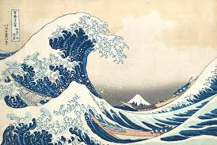

Image Gallery


This is a website about the art movement of Ukiyo-e.
If you follow along the navigation bar you will be led to different articles about the movement itself.
Including, the history, an image gallery, a section about the major influential artists, some themes associated with
the movement, and lastly the materials in which they used to craft their peices.
Ukiyo-e is a genre of Japanese Art which flourished fromf the 17th through the 19th centuries. Its artists produced woodblock prints and paintings of such subjects as female beauties; kabuki actors and sumo wrestlers from history; scenes from history and folk tales; travel scenes and landscapes; flora and fauna; and erotica. The term ukiyo-e translates as "pictures of the floating world".
Some of the major artists of this time period inclue :
Typical subjects were female beauties, kabuki actors and landscapes. The women depicted were often courtesans and geisha at leisure, and promoted the entertainments to be found in pleasure districts. Portraits of celebrities were much in demand, in particular those from the kabuki and sumo worlds, two of the most popular entertainments of the era. While landscapes have come to define ukiyo-e for many Westerners, landscapes flourished relatively late in the ukiyo-e's history.
Early ukiyo-e were referred to as sumizuri-e (black ink prints) and were
printed on washi paper with sumi (black ink).
People began to want prints with color so tan, a pigment made from sulfur
and mercury, was used to paint colors onto the prints. These were called tan-e.
In the eighteenth century, these were joined by beni-e, which used a pigment
extracted from safflowers, and urushi-e, which used black lacquer.
By the mid-eighteenth century, artisans were able to make up two- and three-color prints.
The appearance of the benizuri-e was a major breakthrough. Following on from benizuri-e,
Suzuki Harunobu (1725-1770) started to create multicolored woodblock prints called nishiki-e.